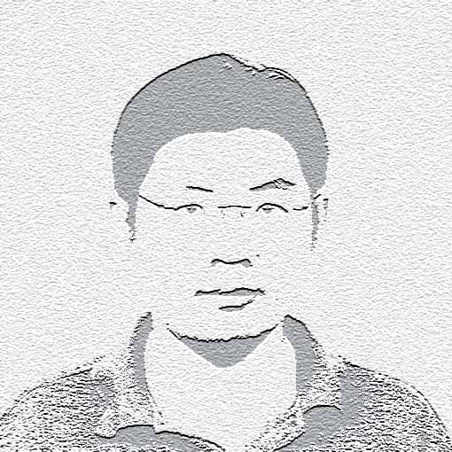

I received my bachelor degree of computer science in 2003 from Shandong University and received my Ph.D degree of information security in 2009, under supervision of Professor Chuankun Wu , from Institute of Software ( IOS ) , CAS . I'm currently a professor and Ph.D supervisor of Institute of Information Engineering (IIE) , CAS . I'm also serves as a professor of School of Cybersecurity , Univeristy of Chinese Academy of Sciences. My current research interests include: AI for cybersecurity, cryptography, cyber attack and defense. I am looking for opportunities to cooperate with researchers within my research interests all over the world.
Professor & Ph.D Supervisor
Institute of Information Engineering, CAS
School of Cybersecurity, University of Chinese Academy of Sciences
17 members
54 students supervised or co-supervised
Conferences, program committees and editorial work